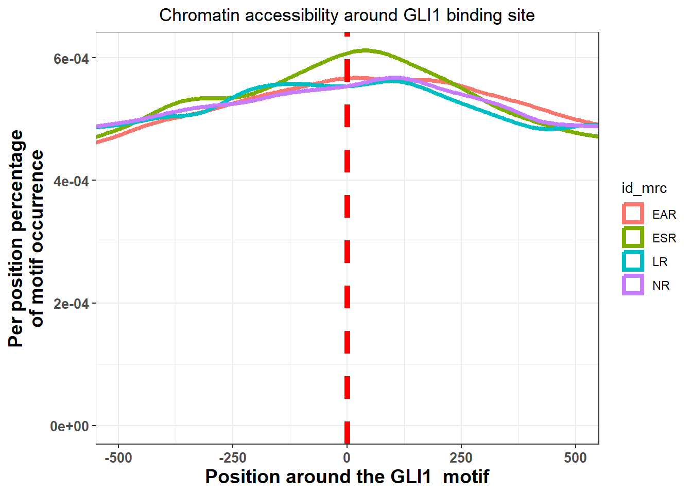
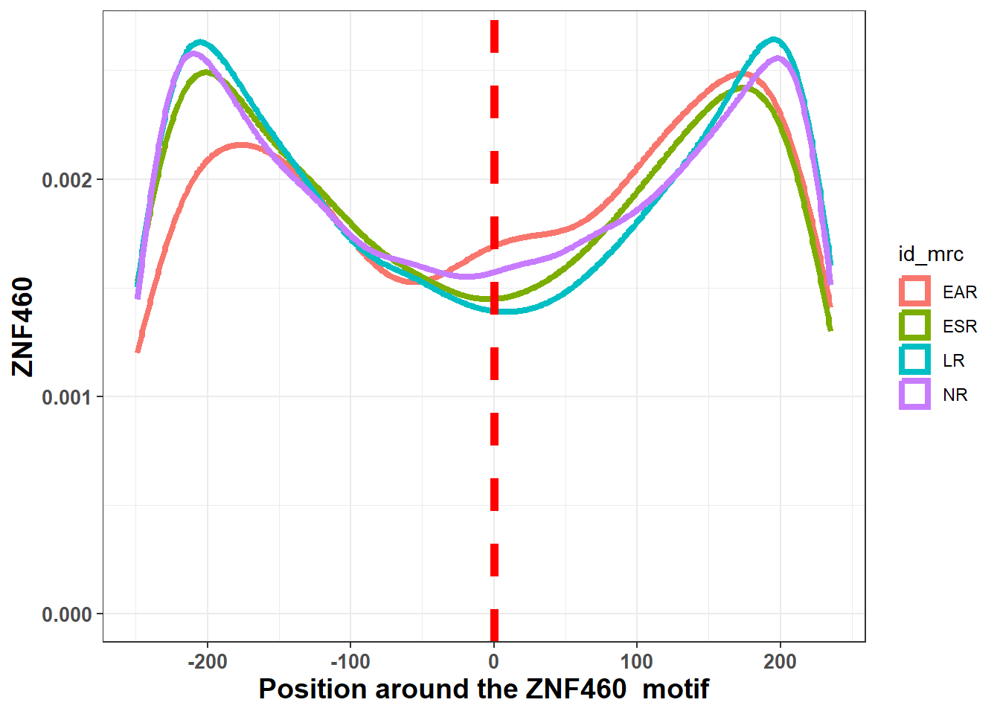

Jaspar_enrichment
ERM
2024-05-03
Last updated: 2024-05-03
Checks: 7 0
Knit directory: ATAC_learning/
This reproducible R Markdown analysis was created with workflowr (version 1.7.1). The Checks tab describes the reproducibility checks that were applied when the results were created. The Past versions tab lists the development history.
Great! Since the R Markdown file has been committed to the Git repository, you know the exact version of the code that produced these results.
Great job! The global environment was empty. Objects defined in the global environment can affect the analysis in your R Markdown file in unknown ways. For reproduciblity it’s best to always run the code in an empty environment.
The command set.seed(20231016) was run prior to running
the code in the R Markdown file. Setting a seed ensures that any results
that rely on randomness, e.g. subsampling or permutations, are
reproducible.
Great job! Recording the operating system, R version, and package versions is critical for reproducibility.
Nice! There were no cached chunks for this analysis, so you can be confident that you successfully produced the results during this run.
Great job! Using relative paths to the files within your workflowr project makes it easier to run your code on other machines.
Great! You are using Git for version control. Tracking code development and connecting the code version to the results is critical for reproducibility.
The results in this page were generated with repository version efbd424. See the Past versions tab to see a history of the changes made to the R Markdown and HTML files.
Note that you need to be careful to ensure that all relevant files for
the analysis have been committed to Git prior to generating the results
(you can use wflow_publish or
wflow_git_commit). workflowr only checks the R Markdown
file, but you know if there are other scripts or data files that it
depends on. Below is the status of the Git repository when the results
were generated:
Ignored files:
Ignored: .RData
Ignored: .Rhistory
Ignored: .Rproj.user/
Ignored: data/All_merged_peaks.tsv
Ignored: data/CAD_gwas_dataframe.RDS
Ignored: data/DEG_toplist_sep_n45.RDS
Ignored: data/FRiP_first_run.txt
Ignored: data/Frip_1_reads.csv
Ignored: data/Frip_2_reads.csv
Ignored: data/Frip_3_reads.csv
Ignored: data/Frip_4_reads.csv
Ignored: data/Frip_5_reads.csv
Ignored: data/Frip_6_reads.csv
Ignored: data/GO_KEGG_analysis/
Ignored: data/Ind1_75DA24h_dedup_peaks.csv
Ignored: data/Ind1_TSS_peaks.RDS
Ignored: data/Ind1_firstfragment_files.txt
Ignored: data/Ind1_fragment_files.txt
Ignored: data/Ind1_peaks_list.RDS
Ignored: data/Ind1_summary.txt
Ignored: data/Ind2_TSS_peaks.RDS
Ignored: data/Ind2_fragment_files.txt
Ignored: data/Ind2_peaks_list.RDS
Ignored: data/Ind2_summary.txt
Ignored: data/Ind3_TSS_peaks.RDS
Ignored: data/Ind3_fragment_files.txt
Ignored: data/Ind3_peaks_list.RDS
Ignored: data/Ind3_summary.txt
Ignored: data/Ind4_79B24h_dedup_peaks.csv
Ignored: data/Ind4_TSS_peaks.RDS
Ignored: data/Ind4_V24h_fraglength.txt
Ignored: data/Ind4_fragment_files.txt
Ignored: data/Ind4_fragment_filesN.txt
Ignored: data/Ind4_peaks_list.RDS
Ignored: data/Ind4_summary.txt
Ignored: data/Ind5_TSS_peaks.RDS
Ignored: data/Ind5_fragment_files.txt
Ignored: data/Ind5_fragment_filesN.txt
Ignored: data/Ind5_peaks_list.RDS
Ignored: data/Ind5_summary.txt
Ignored: data/Ind6_TSS_peaks.RDS
Ignored: data/Ind6_fragment_files.txt
Ignored: data/Ind6_peaks_list.RDS
Ignored: data/Ind6_summary.txt
Ignored: data/Knowles_4.RDS
Ignored: data/Knowles_5.RDS
Ignored: data/Knowles_6.RDS
Ignored: data/MI_gwas.RDS
Ignored: data/SNP_supp_schneider.RDS
Ignored: data/all_TSSE_scores.RDS
Ignored: data/aln_run1_results.txt
Ignored: data/anno_ind1_DA24h.RDS
Ignored: data/anno_ind4_V24h.RDS
Ignored: data/background_n45_he_peaks.RDS
Ignored: data/cardiac_muscle_FRIP.csv
Ignored: data/cardiomyocyte_FRIP.csv
Ignored: data/cormotif_full_4_run.RDS
Ignored: data/cormotif_full_4_run_he.RDS
Ignored: data/cormotif_full_6_run.RDS
Ignored: data/cormotif_full_6_run_he.RDS
Ignored: data/cormotif_probability_45_list.csv
Ignored: data/cormotif_probability_45_list_he.csv
Ignored: data/cormotif_probability_all_6_list.csv
Ignored: data/cormotif_probability_all_6_list_he.csv
Ignored: data/embryo_heart_FRIP.csv
Ignored: data/enhancer_list_ENCFF126UHK.bed
Ignored: data/filt_Peaks_efit2.RDS
Ignored: data/filt_Peaks_efit2_bl.RDS
Ignored: data/filt_Peaks_efit2_n45.RDS
Ignored: data/first_Peaksummarycounts.csv
Ignored: data/first_run_frag_counts.txt
Ignored: data/full_bedfiles/
Ignored: data/gene_ref.csv
Ignored: data/gwas_1_dataframe.RDS
Ignored: data/gwas_2_dataframe.RDS
Ignored: data/gwas_3_dataframe.RDS
Ignored: data/gwas_4_dataframe.RDS
Ignored: data/gwas_5_dataframe.RDS
Ignored: data/high_conf_peak_counts.csv
Ignored: data/high_conf_peak_counts.txt
Ignored: data/high_conf_peaks_bl_counts.txt
Ignored: data/high_conf_peaks_counts.txt
Ignored: data/hits_files/
Ignored: data/ind1_DA24hpeaks.RDS
Ignored: data/ind1_TSSE.RDS
Ignored: data/ind2_TSSE.RDS
Ignored: data/ind3_TSSE.RDS
Ignored: data/ind4_TSSE.RDS
Ignored: data/ind4_V24hpeaks.RDS
Ignored: data/ind5_TSSE.RDS
Ignored: data/ind6_TSSE.RDS
Ignored: data/initial_complete_stats_run1.txt
Ignored: data/left_ventricle_FRIP.csv
Ignored: data/mergedPeads.gff
Ignored: data/mergedPeaks.gff
Ignored: data/motif_list_full
Ignored: data/motif_list_n45
Ignored: data/motif_list_n45.RDS
Ignored: data/multiqc_fastqc_run1.txt
Ignored: data/multiqc_fastqc_run2.txt
Ignored: data/multiqc_genestat_run1.txt
Ignored: data/multiqc_genestat_run2.txt
Ignored: data/my_hc_filt_counts.RDS
Ignored: data/my_hc_filt_counts_n45.RDS
Ignored: data/n45_bedfiles/
Ignored: data/n45_files
Ignored: data/other_papers/
Ignored: data/peakAnnoList_1.RDS
Ignored: data/peakAnnoList_2.RDS
Ignored: data/peakAnnoList_24_full.RDS
Ignored: data/peakAnnoList_24_n45.RDS
Ignored: data/peakAnnoList_3.RDS
Ignored: data/peakAnnoList_3_full.RDS
Ignored: data/peakAnnoList_3_n45.RDS
Ignored: data/peakAnnoList_4.RDS
Ignored: data/peakAnnoList_5.RDS
Ignored: data/peakAnnoList_6.RDS
Ignored: data/peakAnnoList_full_motif.RDS
Ignored: data/peakAnnoList_n45_motif.RDS
Ignored: data/siglist_full.RDS
Ignored: data/siglist_n45.RDS
Ignored: data/testnames.txt
Ignored: data/toplist_6.RDS
Ignored: data/toplist_full.RDS
Ignored: data/toplist_full_DAR_6.RDS
Ignored: data/toplist_n45.RDS
Ignored: data/trimmed_seq_length.csv
Ignored: data/unclassified_full_set_peaks.RDS
Ignored: data/unclassified_n45_set_peaks.RDS
Ignored: data/xstreme/
Ignored: trimmed_Ind1_75DA24h_S7.nodup.splited.bam/
Untracked files:
Untracked: EAR_2_plot.pdf
Untracked: ESR_1_plot.pdf
Untracked: Firstcorr plotATAC.pdf
Untracked: IND1_2_3_6_corrplot.pdf
Untracked: LR_3_plot.pdf
Untracked: NR_1_plot.pdf
Untracked: analysis/my_hc_filt_counts.csv
Untracked: code/IGV_snapshot_code.R
Untracked: code/LongDARlist.R
Untracked: code/TSSE.R
Untracked: code/corMotifcustom.R
Untracked: code/just_for_Fun.R
Untracked: code/toplist_assembly.R
Untracked: lcpm_filtered_corplot.pdf
Untracked: log2cpmfragcount.pdf
Untracked: output/cormotif_probability_45_list.csv
Untracked: output/cormotif_probability_all_6_list.csv
Untracked: splited/
Untracked: trimmed_Ind1_75DA24h_S7.nodup.fragment.size.distribution.pdf
Untracked: trimmed_Ind1_75DA3h_S1.nodup.fragment.size.distribution.pdf
Unstaged changes:
Modified: analysis/CorMotif_data_n45.Rmd
Modified: analysis/Enrichment_motif.Rmd
Modified: analysis/Peak_analysis.Rmd
Modified: analysis/Smaller_set_DAR.Rmd
Note that any generated files, e.g. HTML, png, CSS, etc., are not included in this status report because it is ok for generated content to have uncommitted changes.
These are the previous versions of the repository in which changes were
made to the R Markdown (analysis/Jaspar_motif.Rmd) and HTML
(docs/Jaspar_motif.html) files. If you’ve configured a
remote Git repository (see ?wflow_git_remote), click on the
hyperlinks in the table below to view the files as they were in that
past version.
| File | Version | Author | Date | Message |
|---|---|---|---|---|
| Rmd | efbd424 | reneeisnowhere | 2024-05-03 | first commit |
| html | 59f30bb | reneeisnowhere | 2024-05-03 | Build site. |
| Rmd | c58f48c | reneeisnowhere | 2024-05-03 | first updates |
library(tidyverse)
# library(ggsignif)
# library(cowplot)
# library(ggpubr)
# library(sjmisc)
library(kableExtra)
library(broom)
# library(biomaRt)
library(RColorBrewer)
# library(gprofiler2)
# library(qvalue)
library(ChIPseeker)
library("TxDb.Hsapiens.UCSC.hg38.knownGene")
library("org.Hs.eg.db")
# library(ATACseqQC)
library(rtracklayer)
library(edgeR)
library(ggfortify)
library(limma)
library(readr)
library(BiocGenerics)
library(gridExtra)
library(VennDiagram)
library(scales)
# library(ggVennDiagram)
library(Cormotif)
library(BiocParallel)
library(ggpubr)
library(devtools)
# install_github('davetang/bedr')
library(bedr)
library(JASPAR2022)
library(TFBSTools)
library(MotifDb)
library(BSgenome.Hsapiens.UCSC.hg38)# xstreme_ESR_v_NR <-ESR_v_NR_full_xstreme %>%
# slice_head(n = length(.$ID)-3)
# saveRDS(xstreme_ESR_v_NR, "data/xstreme/xstreme_ESR_v_NR.RDS")
xstreme_EAR_v_NR <- readRDS("data/xstreme/xstreme_EAR_v_NR.RDS")
xstreme_ESR_v_NR <-readRDS("data/xstreme/xstreme_ESR_v_NR.RDS")
xstreme_LR_v_NR <- readRDS("data/xstreme/xstreme_LR_v_NR.RDS")
#
# xstreme_EAR_v_LR <- readRDS("data/xstreme/xstreme_EAR_v_LR.RDS")
#
# xstreme_ESR_v_LR <- readRDS("data/xstreme/xstreme_ESR_v_LR.RDS")
# saveRDS(ESR_streme_sites, "data/xstreme/ESR_streme_sites.RDS")
# ESR_binding_sites <- ESR_streme_sites %>%
# dplyr::select(seq_ID:site_Sequence,motif_ID, motif_ALT_ID) %>%
# rename(seq_ID = "seqnames",site_Start = "start", site_End = "end") %>%
# dplyr::filter(!is.na(seqnames)) %>%
# GRanges()
# rtracklayer::export.bed(ESR_binding_sites , con="data/n45_bedfiles/ESR_binding_sites.bed", format="bed", ignore.strand = FALSE)xstreme_EAR_v_NR %>%
dplyr::select(SIM_MOTIF,ALT_ID, ID,EVALUE) %>%
arrange(.,EVALUE) %>%
separate(SIM_MOTIF, into= c("SIM_MOTIF", "NAME"), sep= " ") %>%
dplyr::filter(., EVALUE<0.05) %>%
kable(., caption = "Enriched motifs (EVALUE < 0.05) in EAR v NR") %>%
kable_paper("striped", full_width = TRUE) %>%
kable_styling(full_width = FALSE, font_size = 16) %>%
scroll_box(height = "500px")| SIM_MOTIF | NAME | ALT_ID | ID | EVALUE |
|---|---|---|---|---|
| TGTGTRTGTGTGTGT | NA | MEME-2 | TGTGTRTGTGTGTGT | 0.00e+00 |
| MA0682.2 | (PITX1) | MEME-1 | GCTGGGATTACAGGC | 0.00e+00 |
| MA1125.1 | (ZNF384) | MEME-3 | TTTTTTTTTTTTWKT | 0.00e+00 |
| MA1596.1 | (ZNF460) | MEME-4 | CTCRGCCTCCCRARK | 0.00e+00 |
| MA0508.3 | (PRDM1) | MEME-5 | RGAGRGAGRGA | 0.00e+00 |
| MA1973.1 | (ZKSCAN3) | MEME-6 | CCAGCCTGGGCRACA | 0.00e+00 |
| MA0119.1 | (NFIC::TLX1) | MEME-8 | GGCRYGGTGGCTCAY | 1.00e-07 |
| MA1721.1 | (ZNF93) | MEME-7 | GSGGCGGSGGCGGSG | 8.00e-07 |
| TTGCAGTGAGCYGAG | NA | MEME-9 | TTGCAGTGAGCYGAG | 2.40e-05 |
| 1-AGATGACA | NA | STREME-1 | 1-AGATGACA | 3.55e-02 |
| MA0805.1 | (TBX1) | STREME-2 | 2-TCACACAT | 3.73e-02 |
xstreme_ESR_v_NR %>%
dplyr::select(SIM_MOTIF,ALT_ID, ID,EVALUE) %>%
arrange(.,EVALUE) %>%
separate(SIM_MOTIF, into= c("SIM_MOTIF", "NAME"), sep= " ") %>%
dplyr::filter(., EVALUE<0.05) %>%
kable(., caption = "Enriched motifs (EVALUE < 0.05) in ESR v NR") %>%
kable_paper("striped", full_width = TRUE) %>%
kable_styling(full_width = FALSE, font_size = 16) %>%
scroll_box(height = "800px")| SIM_MOTIF | NAME | ALT_ID | ID | EVALUE |
|---|---|---|---|---|
| GTGTGTGTRTGTGTG | NA | MEME-3 | GTGTGTGTRTGTGTG | 0.0000 |
| MA1990.1 | (Gli1) | MEME-1 | TGGTGTGTGGTGTGT | 0.0000 |
| TGTGTGYGTGTGTGT | NA | MEME-5 | TGTGTGYGTGTGTGT | 0.0000 |
| MA1155.1 | (ZSCAN4) | MEME-2 | GTGTGTGTGTGTG | 0.0000 |
| CCCTCAYCRAGWCCC | NA | MEME-6 | CCCTCAYCRAGWCCC | 0.0000 |
| MA1125.1 | (ZNF384) | MEME-4 | MAAAAAAAAAAAAAA | 0.0000 |
| TGTGTGYATGTGTGT | NA | MEME-9 | TGTGTGYATGTGTGT | 0.0000 |
| MA0812.1 | (TFAP2B) | MEME-10 | CCWGCCTSRGCCWCM | 0.0000 |
| AGRCGCTCCTCACTT | NA | MEME-7 | AGRCGCTCCTCACTT | 0.0000 |
| MA0682.2 | (PITX1) | MEME-8 | GCTGGGATTACAGGC | 0.0000 |
| MA1107.2 | (KLF9) | STREME-1 | 1-CCCACACC | 0.0208 |
| 2-CAGACACAT | NA | STREME-2 | 2-CAGACACAT | 0.0460 |
| 3-GACTGCCTCCTCA | NA | STREME-3 | 3-GACTGCCTCCTCA | 0.0470 |
| MA1710.1 | (ZNF257) | STREME-4 | 4-CCTCCTGCCTCAKYM | 0.0470 |
xstreme_LR_v_NR %>%
dplyr::select(SIM_MOTIF,ALT_ID, ID,EVALUE) %>%
arrange(.,EVALUE) %>%
separate(SIM_MOTIF, into= c("SIM_MOTIF", "NAME"), sep= " ") %>%
dplyr::filter(., EVALUE<0.05) %>%
kable(., caption = "Enriched motifs (EVALUE < 0.05) in LR v NR") %>%
kable_paper("striped", full_width = TRUE) %>%
kable_styling(full_width = FALSE, font_size = 16) %>%
scroll_box(height = "800px")| SIM_MOTIF | NAME | ALT_ID | ID | EVALUE |
|---|---|---|---|---|
| MA1125.1 | (ZNF384) | MEME-1 | AAAAWAAAAAAAWWA | 0.000000 |
| AYACACATAYACACA | NA | MEME-3 | AYACACATAYACACA | 0.000000 |
| MA1125.1 | (ZNF384) | MEME-2 | AAAAAAAAAAAAAAA | 0.000000 |
| MA1547.2 | (PITX2) | MEME-5 | TAATCCCAGCACTTT | 0.000000 |
| MA1125.1 | (ZNF384) | MEME-4 | AAAAADAAAAA | 0.000000 |
| TGTGTGGTRTGKKGT | NA | MEME-7 | TGTGTGGTRTGKKGT | 0.000000 |
| MA0477.2 | (FOSL1) | STREME-1 | 1-DDATGASTCATHH | 0.000000 |
| MA1101.2 | (BACH2) | MEME-6 | AAWGGGATGAKTCAY | 0.000000 |
| MA0052.4 | (MEF2A) | MEME-8 | ATTTATTTTWA | 0.000300 |
| MA0610.1 | (DMRT3) | STREME-2 | 2-AATACA | 0.000485 |
| 3-WCATGW | NA | STREME-3 | 3-WCATGW | 0.000669 |
| 4-ATAKMTAT | NA | STREME-4 | 4-ATAKMTAT | 0.007690 |
| MA1124.1 | (ZNF24) | STREME-5 | 5-TSATKCA | 0.008060 |
| MA1487.2 | (FOXE1) | STREME-6 | 6-CAAACAA | 0.009990 |
| MA0018.4 | (CREB1) | STREME-7 | 7-ACATCA | 0.026300 |
| 8-ACTTAT | NA | STREME-8 | 8-ACTTAT | 0.044600 |
### selecting just the list of names and checking for expression
gene_list_SEA <- xstreme_EAR_v_NR %>%
dplyr::select(SIM_MOTIF,ALT_ID, ID,EVALUE) %>%
arrange(.,EVALUE) %>%
separate(SIM_MOTIF, into= c("SIM_MOTIF", "NAME"), sep= " ") %>%
mutate(MCR="EAR") %>%
bind_rows(xstreme_ESR_v_NR %>%
dplyr::select(SIM_MOTIF,ALT_ID, ID,EVALUE) %>%
arrange(.,EVALUE) %>%
separate(SIM_MOTIF, into= c("SIM_MOTIF", "NAME"), sep= " ") %>%
mutate(MCR="ESR")) %>%
bind_rows(xstreme_LR_v_NR %>%
dplyr::select(SIM_MOTIF,ALT_ID, ID,EVALUE) %>%
arrange(.,EVALUE) %>%
separate(SIM_MOTIF, into= c("SIM_MOTIF", "NAME"), sep= " ") %>%
mutate(MCR="LR")) %>%
dplyr::filter(!is.na(NAME)) %>%
mutate(NAME= gsub("[()]","",NAME)) %>%
distinct(NAME)
# xstreme_EAR_v_LR %>%
# dplyr::select(SIM_MOTIF,ALT_ID, ID,SITES,EVALUE) %>%
# arrange(.,EVALUE) %>%
# separate(SIM_MOTIF, into= c("SIM_MOTIF", "NAME"), sep= " ") %>%
# dplyr::filter(., EVALUE<0.05) %>%
# kable(., caption = "Enriched motifs (EVALUE < 0.05) in EAR v LR") %>%
# kable_paper("striped", full_width = TRUE) %>%
# kable_styling(full_width = FALSE, font_size = 16) %>%
# scroll_box(height = "800px")
#
#
# xstreme_ESR_v_LR %>%
# dplyr::select(SIM_MOTIF,ALT_ID, ID,SITES,EVALUE) %>%
# arrange(.,EVALUE) %>%
# separate(SIM_MOTIF, into= c("SIM_MOTIF", "NAME"), sep= " ") %>%
# dplyr::filter(., EVALUE<0.05) %>%
# kable(., caption = "Enriched motifs (EVALUE < 0.05) in ESR v LR") %>%
# kable_paper("striped", full_width = TRUE) %>%
# kable_styling(full_width = FALSE, font_size = 16) %>%
# scroll_box(height = "800px")enriched motifs
# xstreme_EAR_v_NR %>%
# dplyr::select(CLUSTER, SITES,SIM_MOTIF,ALT_ID, ID,EVALUE) %>%
# dplyr::filter(., EVALUE<0.05) %>%
# separate(SIM_MOTIF, into= c("SIM_MOTIF", "NAME"), sep= " ") %>%
# # arrange(.,EVALUE) %>%
# mutate(log10Evalue= log10(EVALUE)*(-1)) %>%
# mutate(motif_name= gsub("[()]","",NAME), mrc="EAR") %>%
# bind_rows(., (xstreme_ESR_v_NR %>%
# dplyr::select(CLUSTER, SITES,SIM_MOTIF,ALT_ID, ID,EVALUE) %>%
# dplyr::filter(., EVALUE<0.05) %>%
# separate(SIM_MOTIF, into= c("SIM_MOTIF", "NAME"), sep= " ") %>%
# # arrange(.,EVALUE) %>%
# mutate(log10Evalue= log10(EVALUE)*(-1)) %>%
# mutate(motif_name= gsub("[()]","",NAME), mrc="ESR"))) %>%
# bind_rows(., (xstreme_LR_v_NR %>%
# dplyr::select(CLUSTER, SITES,SIM_MOTIF,ALT_ID, ID,EVALUE) %>%
# dplyr::filter(., EVALUE<0.05) %>%
# separate(SIM_MOTIF, into= c("SIM_MOTIF", "NAME"), sep= " ") %>%
# # arrange(.,EVALUE) %>%
# mutate(log10Evalue= log10(EVALUE)*(-1)) %>%
# mutate(motif_name= gsub("[()]","",NAME), mrc="LR"))) %>%
# dplyr::filter(!is.na(motif_name)) %>%
# # group_by(mrc) %>%
# dplyr::arrange(.,desc(log10Evalue)) %>%
# mutate(mrc=factor(mrc, levels = c("EAR", "ESR", "LR"))) %>%
# ggplot(., aes (x= log10Evalue, y= reorder(motif_name, log10Evalue), fill=mrc)) +
# geom_col()+
# facet_wrap(~mrc)
xstreme_EAR_v_NR %>%
dplyr::select(CLUSTER, SITES,SIM_MOTIF,ALT_ID, ID,EVALUE) %>%
dplyr::filter(., EVALUE<0.05) %>%
separate(SIM_MOTIF, into= c("SIM_MOTIF", "NAME"), sep= " ") %>%
arrange(.,EVALUE) %>%
mutate(log10Evalue= log10(EVALUE)*(-1)) %>%
mutate(motif_name= gsub("[()]","",NAME), mrc="EAR") %>%
dplyr::filter(!is.na(motif_name)) %>%
# group_by(mrc) %>%
dplyr::arrange(.,desc(log10Evalue)) %>%
ggplot(., aes (x= log10Evalue, y= reorder(motif_name,log10Evalue))) +
geom_col(fill="red") +
theme_classic()+
xlim(0,140)
| Version | Author | Date |
|---|---|---|
| 59f30bb | reneeisnowhere | 2024-05-03 |
xstreme_ESR_v_NR %>%
dplyr::select(CLUSTER, SITES,SIM_MOTIF,ALT_ID, ID,EVALUE) %>%
dplyr::filter(., EVALUE<0.05) %>%
separate(SIM_MOTIF, into= c("SIM_MOTIF", "NAME"), sep= " ") %>%
arrange(.,EVALUE) %>%
mutate(log10Evalue= log10(EVALUE)*(-1)) %>%
mutate(motif_name= gsub("[()]","",NAME), mrc="EAR") %>%
dplyr::filter(!is.na(motif_name)) %>%
# group_by(mrc) %>%
dplyr::arrange(.,desc(log10Evalue)) %>%
ggplot(., aes (x= log10Evalue, y= reorder(motif_name,log10Evalue), fill=mrc)) +
geom_col(fill="blue") +
theme_classic()
| Version | Author | Date |
|---|---|---|
| 59f30bb | reneeisnowhere | 2024-05-03 |
xstreme_LR_v_NR %>%
dplyr::select(CLUSTER, SITES,SIM_MOTIF,ALT_ID, ID,EVALUE) %>%
dplyr::filter(., EVALUE<0.05) %>%
separate(SIM_MOTIF, into= c("SIM_MOTIF", "NAME"), sep= " ") %>%
arrange(.,EVALUE) %>%
mutate(log10Evalue= log10(EVALUE)*(-1)) %>%
mutate(motif_name= gsub("[()]","",NAME), mrc="EAR") %>%
dplyr::filter(!is.na(motif_name)) %>%
# group_by(mrc) %>%
dplyr::arrange(.,desc(log10Evalue)) %>%
ggplot(., aes (x= log10Evalue, y= reorder(motif_name,log10Evalue), fill=mrc)) +
geom_col(fill="green") +
theme_classic()
| Version | Author | Date |
|---|---|---|
| 59f30bb | reneeisnowhere | 2024-05-03 |
## can I see if anyof these genes are in expression data:
toplistall_RNA <- readRDS("data/other_papers/toplistall_RNA.RDS")
###Because of how I applied the DEG system in RNA-seq analysis, the lFC is opposite of the
###counts. I did trt-veh instead of veh-trt. therefore I need to multiply lfc by -1 to get t
###the right correlation.
toplistall_RNA <- toplistall_RNA %>%
mutate(logFC = logFC*(-1))
RNA_expresed_genes <- toplistall_RNA %>%
# dplyr::filter(adj.P.Val <0.05) %>%
mutate(expression = if_else(logFC<0,"down","up")) %>%
dplyr::select(ENTREZID,SYMBOL,expression) %>%
# dplyr::select(ENTREZID,SYMBOL) %>%
unique(.)
RNA_expresed_genes_DE <- toplistall_RNA %>%
dplyr::filter(adj.P.Val <0.05) %>%
mutate(expression = if_else(logFC<0,"down","up")) %>%
dplyr::select(ENTREZID,SYMBOL,expression) %>%
unique(.)
#
# motifgenes_EAR_v_LR <- xstreme_EAR_v_LR %>%
# dplyr::select(SIM_MOTIF,ALT_ID, ID,SITES,EVALUE) %>%
# arrange(.,EVALUE) %>%
# separate(SIM_MOTIF, into= c("SIM_MOTIF", "NAME"), sep= " ") %>%
# dplyr::filter(., EVALUE<0.05) %>%
# mutate(motif_name= gsub("[()]","",NAME)) %>%
# dplyr::select(SIM_MOTIF,motif_name) %>%
# unique()
#
# motifgenes_ESR_v_LR <- xstreme_ESR_v_LR %>%
# dplyr::select(SIM_MOTIF,ALT_ID, ID,SITES,EVALUE) %>%
# arrange(.,EVALUE) %>%
# separate(SIM_MOTIF, into= c("SIM_MOTIF", "NAME"), sep= " ") %>%
# dplyr::filter(., EVALUE<0.05) %>%
# mutate(motif_name= gsub("[()]","",NAME)) %>%
# dplyr::select(SIM_MOTIF,motif_name) %>%
# unique()
motifgenes_EAR_v_NR <- xstreme_EAR_v_NR %>%
dplyr::select(SIM_MOTIF,ALT_ID, ID,SITES,EVALUE) %>%
arrange(.,EVALUE) %>%
separate(SIM_MOTIF, into= c("SIM_MOTIF", "NAME"), sep= " ") %>%
dplyr::filter(., EVALUE<0.05) %>%
mutate(motif_name= gsub("[()]","",NAME)) %>%
dplyr::select(SIM_MOTIF,motif_name,SITES) %>%
unique()
motifgenes_ESR_v_NR <- xstreme_ESR_v_NR %>%
dplyr::select(SIM_MOTIF,ALT_ID, ID,SITES,EVALUE) %>%
arrange(.,EVALUE) %>%
separate(SIM_MOTIF, into= c("SIM_MOTIF", "NAME"), sep= " ") %>%
dplyr::filter(., EVALUE<0.05) %>%
mutate(motif_name= gsub("[()]","",NAME)) %>%
dplyr::select(SIM_MOTIF,motif_name,SITES) %>%
unique()
motifgenes_LR_v_NR <- xstreme_LR_v_NR %>%
dplyr::select(SIM_MOTIF,ALT_ID, ID,SITES,EVALUE) %>%
arrange(.,EVALUE) %>%
separate(SIM_MOTIF, into= c("SIM_MOTIF", "NAME"), sep= " ") %>%
dplyr::filter(., EVALUE<0.05) %>%
mutate(motif_name= gsub("[()]","",NAME)) %>%
dplyr::select(SIM_MOTIF,motif_name) %>%
unique()
gene_list_SEA %>%
mutate(express_RNA=if_else(NAME %in% RNA_expresed_genes$SYMBOL,"exp","not_exp"),DE_RNA=if_else(NAME %in% RNA_expresed_genes_DE$SYMBOL,"DE","notDE")) %>%
rowid_to_column("row_name") %>%
kable(., caption= "RNA DE genes expresssed in EAR MRCs that contain SNPs associated with Heart disease") %>%
kable_paper("striped", full_width = TRUE) %>%
kable_styling(full_width = FALSE, font_size = 16) %>%
scroll_box(height = "800px")| row_name | NAME | express_RNA | DE_RNA |
|---|---|---|---|
| 1 | PITX1 | not_exp | notDE |
| 2 | ZNF384 | exp | notDE |
| 3 | ZNF460 | exp | notDE |
| 4 | PRDM1 | exp | DE |
| 5 | ZKSCAN3 | exp | DE |
| 6 | NFIC::TLX1 | not_exp | notDE |
| 7 | ZNF93 | exp | DE |
| 8 | TBX1 | not_exp | notDE |
| 9 | GATA2 | exp | DE |
| 10 | GFI1 | not_exp | notDE |
| 11 | NKX2-2 | not_exp | notDE |
| 12 | Atf3 | not_exp | notDE |
| 13 | Gli1 | not_exp | notDE |
| 14 | ZSCAN4 | not_exp | notDE |
| 15 | TFAP2B | not_exp | notDE |
| 16 | KLF9 | exp | notDE |
| 17 | ZNF257 | not_exp | notDE |
| 18 | NFIB | exp | DE |
| 19 | PITX2 | exp | notDE |
| 20 | FOSL1 | exp | DE |
| 21 | BACH2 | exp | DE |
| 22 | MEF2A | exp | notDE |
| 23 | DMRT3 | not_exp | notDE |
| 24 | ZNF24 | exp | notDE |
| 25 | FOXE1 | not_exp | notDE |
| 26 | CREB1 | exp | DE |
| 27 | SRF | exp | DE |
peakAnnoList_n45_motif <- readRDS("data/peakAnnoList_n45_motif.RDS")
list2env(peakAnnoList_n45_motif, envir = .GlobalEnv)<environment: R_GlobalEnv>EAR_df <- as.data.frame(peakAnnoList_n45_motif$EAR_n45_gr)
EAR_df_gr <- GRanges(EAR_df)
ESR_df <- as.data.frame(peakAnnoList_n45_motif$ESR_n45_gr)
ESR_df_gr <- GRanges(ESR_df)
LR_df <- as.data.frame(peakAnnoList_n45_motif$LR_n45_gr)
LR_df_gr <- GRanges(LR_df)
NR_df <- as.data.frame(peakAnnoList_n45_motif$NR_n45_gr)
NR_df_gr <- GRanges(NR_df)
ESR_peaks_resized = resize(ESR_df_gr, width = 2000, fix='center')
EAR_peaks_resized = resize(EAR_df_gr, width = 2000, fix='center')
LR_peaks_resized = resize(LR_df_gr, width = 2000, fix='center')
NR_peaks_resized = resize(NR_df_gr, width = 2000, fix='center')
ESR_peaks_resized_500 = resize(ESR_df_gr, width = 1000, fix='center')
EAR_peaks_resized_500 = resize(EAR_df_gr, width = 1000, fix='center')
LR_peaks_resized_500 = resize(LR_df_gr, width = 1000, fix='center')
NR_peaks_resized_500 = resize(NR_df_gr, width = 1000, fix='center')
# ESR_peaks_resized_site = resize(ESR_df_gr, fix='center')
seq_ESR = getSeq(BSgenome.Hsapiens.UCSC.hg38, ESR_peaks_resized)
seq_EAR = getSeq(BSgenome.Hsapiens.UCSC.hg38, EAR_peaks_resized)
seq_LR = getSeq(BSgenome.Hsapiens.UCSC.hg38, LR_peaks_resized)
seq_NR = getSeq(BSgenome.Hsapiens.UCSC.hg38, NR_peaks_resized)
seq_ESR_500 = getSeq(BSgenome.Hsapiens.UCSC.hg38, ESR_peaks_resized_500)
seq_EAR_500 = getSeq(BSgenome.Hsapiens.UCSC.hg38, EAR_peaks_resized_500)
seq_LR_500 = getSeq(BSgenome.Hsapiens.UCSC.hg38, LR_peaks_resized_500)
seq_NR_500 = getSeq(BSgenome.Hsapiens.UCSC.hg38, NR_peaks_resized_500)
seq_ESR_norm = getSeq(BSgenome.Hsapiens.UCSC.hg38, ESR_df_gr)
seq_EAR_norm = getSeq(BSgenome.Hsapiens.UCSC.hg38, EAR_df_gr)
seq_LR_norm = getSeq(BSgenome.Hsapiens.UCSC.hg38, LR_df_gr)
seq_NR_norm = getSeq(BSgenome.Hsapiens.UCSC.hg38, NR_df_gr)FOXD3
**not enriched
ZNF384
enriched in EAR, ESR, LR
# motifs_ZNF384 = query(query(MotifDb, 'Hsapiens'), 'ZNF384')
# ZNF384_motif <- motifs_ZNF384$`Hsapiens-jaspar2022-ZNF384-MA1125.1`
# #
# #
# ZNF384_pwm = PWMatrix(
# ID = 'ZNF384',
# profileMatrix = ZNF384_motif)
hits_ESR_ZNF384 <- readRDS("data/hits_files/ZNF384_hits_ESR.RDS")
# hits = searchSeq(ZNF384_pwm, seq_ESR, min.score="80%", strand="*")
# hits_ESR <- hits
# hits_ESR <- as.data.frame(hits_ESR)
# saveRDS(hits_ESR,"data/hits_files/ZNF384_hits_ESR.RDS")
# hits_ESR_ZNF384 %>%
# mutate(position=start-1000) %>%
# ggplot(.,aes(position))+
# geom_density(size=2) +
# theme_bw() +
# geom_vline(xintercept = 0, linetype=2, color='red', size=2) +
# xlab('Position around the ZNF384 peaks') +
# ylab('Per position percentage\nof motif occurrence') +
# ggtitle("ESR: ZNF384 binding")+
# theme(
# axis.text = element_text(size=10, face='bold'),
# axis.title = element_text(size=14,face="bold"),
# plot.title = element_text(hjust = 0.5))
hits_EAR_ZNF384 <- readRDS("data/hits_files/ZNF384_hits_EAR.RDS")
# hits_EAR <- searchSeq(ZNF384_pwm, seq_EAR, min.score="80%", strand="*")
# hits_EAR <- as.data.frame(hits_EAR)
# saveRDS(hits_EAR,"data/hits_files/ZNF384_hits_EAR.RDS")
# hits_EAR_ZNF384 %>%
# mutate(position=start-1000) %>%
# ggplot(.,aes(position))+
# geom_density(size=2) +
# theme_bw() +
# geom_vline(xintercept = 0, linetype=2, color='red', size=2) +
# xlab('Position around the ZNF384 peaks') +
# ylab('Per position percentage\nof motif occurrence') +
# ggtitle("EAR: ZNF384 binding")+
# theme(
# axis.text = element_text(size=10, face='bold'),
# axis.title = element_text(size=14,face="bold"),
# plot.title = element_text(hjust = 0.5))
hits_LR_ZNF384 <- readRDS("data/hits_files/ZNF384_hits_LR.RDS")
# hits_LR <- searchSeq(ZNF384_pwm, seq_LR, min.score="80%", strand="*")
# hits_LR <- as.data.frame(hits_LR)
# saveRDS(hits_LR,"data/hits_files/ZNF384_hits_LR.RDS")
# hits_LR_ZNF384 %>%
# mutate(position=start-1000) %>%
# ggplot(.,aes(position))+
# geom_density(size=2) +
# theme_bw() +
# geom_vline(xintercept = 0, linetype=2, color='red', size=2) +
# xlab('Position around the ZNF384 peaks') +
# ylab('Per position percentage\nof motif occurrence') +
# ggtitle("LR: ZNF384 binding")+
# theme(
# axis.text = element_text(size=10, face='bold'),
# axis.title = element_text(size=14,face="bold"),
# plot.title = element_text(hjust = 0.5))
hits_NR_ZNF384 <- readRDS("data/hits_files/ZNF384_hits_NR.RDS")
# hits_NR <- searchSeq(ZNF384_pwm, seq_NR, min.score="80%", strand="*")
# hits_NR <- as.data.frame(hits_NR)
# saveRDS(hits_NR,"data/hits_files/ZNF384_hits_NR.RDS")
hits_NR_ZNF384 %>%
mutate(position=start-1000) %>%
mutate(id_mrc="NR") %>%
rbind(.,(hits_LR_ZNF384 %>% mutate(position=start-1000) %>%
mutate(id_mrc="LR"))) %>%
rbind(.,(hits_ESR_ZNF384 %>% mutate(position=start-1000) %>%
mutate(id_mrc="ESR"))) %>%
rbind(.,(hits_EAR_ZNF384 %>% mutate(position=start-1000) %>%
mutate(id_mrc="EAR"))) %>%
ggplot(.,aes(position, color = id_mrc))+
geom_density(size=1.5) +
# geom_density(data=hits_LR_ZNF384, aes(position))+
theme_bw() +
geom_vline(xintercept = 0, linetype=2, color='red', size=2) +
xlab('Position around the ZNF384 motif') +
ylab('Per position percentage\nof motif occurrence') +
ggtitle("Chromatin accessibility around ZNF384 binding site")+
theme(
axis.text = element_text(size=10, face='bold'),
axis.title = element_text(size=14,face="bold"),
plot.title = element_text(hjust = 0.5))
| Version | Author | Date |
|---|---|---|
| 59f30bb | reneeisnowhere | 2024-05-03 |
ZKSCAN3
enriched in EAR
#
# motifs_ZKSCAN3 = query(query(MotifDb, 'Hsapiens'), 'ZKSCAN3')
# ZKSCAN3_motif <- motifs_ZKSCAN3$`Hsapiens-jaspar2022-ZKSCAN3-MA1973.1`
#
#
# ZKSCAN3_pwm = PWMatrix(
# ID = 'ZKSCAN3',
# profileMatrix = ZKSCAN3_motif)
hits_ESR_ZKSCAN3 <- readRDS("data/hits_files/ZKSCAN3_hits_ESR.RDS")
hits_ESR_ZKSCAN3_norm<-readRDS("data/hits_files/ZKSCAN3_hits_ESR_norm.RDS")
# hits = searchSeq(ZKSCAN3_pwm, seq_ESR_norm, min.score="80%", strand="*")
# hits_ESR <- hits
# hits_ESR <- as.data.frame(hits_ESR)
# saveRDS(hits_ESR,"data/hits_files/ZKSCAN3_hits_ESR_norm.RDS")
#
# hits_ESR_ZKSCAN3_norm %>%
# mutate(position=start-1611.5) %>%
# ggplot(.,aes(position))+
# geom_density(size=2) +
# theme_bw() +
# geom_vline(xintercept = 0, linetype=2, color='red', size=2) +
# xlab('Position around the ZKSCAN3 motif') +
# ylab('Per position percentage\nof motif occurrence') +
# ggtitle("ESR: ZKSCAN3 binding")+
# theme(
# axis.text = element_text(size=10, face='bold'),
# axis.title = element_text(size=14,face="bold"),
# plot.title = element_text(hjust = 0.5))
hits_EAR_ZKSCAN3 <- readRDS("data/hits_files/ZKSCAN3_hits_EAR.RDS")
# hits_EAR <- searchSeq(ZKSCAN3_pwm, seq_EAR, min.score="80%", strand="*")
# hits_EAR <- as.data.frame(hits_EAR)
# saveRDS(hits_EAR,"data/hits_files/ZKSCAN3_hits_EAR.RDS")
# hits_EAR_ZKSCAN3 %>%
# mutate(position=start-1000) %>%
# ggplot(.,aes(position))+
# geom_density(size=2) +
# theme_bw() +
# geom_vline(xintercept = 0, linetype=2, color='red', size=2) +
# xlab('Position around the ZKSCAN3 peaks') +
# ylab('Per position percentage\nof motif occurrence') +
# ggtitle("EAR: ZKSCAN3 binding")+
# theme(
# axis.text = element_text(size=10, face='bold'),
# axis.title = element_text(size=14,face="bold"),
# plot.title = element_text(hjust = 0.5))
hits_LR_ZKSCAN3 <- readRDS("data/hits_files/ZKSCAN3_hits_LR.RDS")
# hits_LR <- searchSeq(ZKSCAN3_pwm, seq_LR, min.score="80%", strand="*")
# hits_LR <- as.data.frame(hits_LR)
# saveRDS(hits_LR,"data/hits_files/ZKSCAN3_hits_LR.RDS")
# hits_LR_ZKSCAN3 %>%
# mutate(position=start-1000) %>%
# ggplot(.,aes(position))+
# geom_density(size=2) +
# theme_bw() +
# geom_vline(xintercept = 0, linetype=2, color='red', size=2) +
# xlab('Position around the ZKSCAN3 peaks') +
# ylab('Per position percentage\nof motif occurrence') +
# ggtitle("LR: ZKSCAN3 binding")+
# theme(
# axis.text = element_text(size=10, face='bold'),
# axis.title = element_text(size=14,face="bold"),
# plot.title = element_text(hjust = 0.5))
hits_NR_ZKSCAN3 <- readRDS("data/hits_files/ZKSCAN3_hits_NR.RDS")
# hits_NR <- searchSeq(ZKSCAN3_pwm, seq_NR, min.score="80%", strand="*")
# hits_NR <- as.data.frame(hits_NR)
# saveRDS(hits_NR,"data/hits_files/ZKSCAN3_hits_NR.RDS")
hits_NR_ZKSCAN3 %>%
mutate(position=start-1000) %>%
mutate(id_mrc="NR") %>%
rbind(.,(hits_LR_ZKSCAN3 %>% mutate(position=start-1000) %>%
mutate(id_mrc="LR"))) %>%
rbind(.,(hits_ESR_ZKSCAN3 %>% mutate(position=start-1000) %>%
mutate(id_mrc="ESR"))) %>%
rbind(.,(hits_EAR_ZKSCAN3 %>% mutate(position=start-1000) %>%
mutate(id_mrc="EAR"))) %>%
ggplot(.,aes(position, color = id_mrc))+
geom_density(size=1.5) +
# geom_density(data=hits_LR_ZKSCAN3, aes(position))+
theme_bw() +
geom_vline(xintercept = 0, linetype=2, color='red', size=2) +
xlab('Position around the ZKSCAN3 peaks') +
ylab('Per position percentage\nof motif occurrence') +
ggtitle("Chromatin accessibility around ZKSCAN3 binding site")+
theme(
axis.text = element_text(size=10, face='bold'),
axis.title = element_text(size=14,face="bold"),
plot.title = element_text(hjust = 0.5))
| Version | Author | Date |
|---|---|---|
| 59f30bb | reneeisnowhere | 2024-05-03 |
PITX1
enriched in EAR and ESR
#
# motifs_PITX1 = query(query(MotifDb, 'Hsapiens'), 'PITX1')
# PITX1_motif <- motifs_PITX1$`Hsapiens-jaspar2022-PITX1-MA0682.2`
# PITX1_pwm = PWMatrix(
# ID = 'PITX1',
# profileMatrix = PITX1_motif)
hits_ESR_PITX1 <- readRDS("data/hits_files/PITX1_hits_ESR.RDS")
# hits_ESR = searchSeq(PITX1_pwm, seq_ESR, min.score="80%", strand="*")
# hits_ESR <- hits
# hits_ESR <- as.data.frame(hits_ESR)
# saveRDS(hits_ESR,"data/hits_files/PITX1_hits_ESR.RDS")
hits_ESR_PITX1 %>%
mutate(position=start-1000) %>%
ggplot(.,aes(position))+
geom_density(size=2) +
theme_bw() +
geom_vline(xintercept = 0, linetype=2, color='red', size=2) +
xlab('Position around the PITX1 peaks') +
ylab('Per position percentage\nof motif occurrence') +
ggtitle("ESR: PITX1 binding")+
theme(
axis.text = element_text(size=10, face='bold'),
axis.title = element_text(size=14,face="bold"),
plot.title = element_text(hjust = 0.5))
| Version | Author | Date |
|---|---|---|
| 59f30bb | reneeisnowhere | 2024-05-03 |
hits_EAR_PITX1 <- readRDS("data/hits_files/PITX1_hits_EAR.RDS")
# hits_EAR <- searchSeq(PITX1_pwm, seq_EAR, min.score="80%", strand="*")
# hits_EAR <- as.data.frame(hits_EAR)
# saveRDS(hits_EAR,"data/hits_files/PITX1_hits_EAR.RDS")
hits_EAR_PITX1 %>%
mutate(position=start-1000) %>%
ggplot(.,aes(position))+
geom_density(size=2) +
theme_bw() +
geom_vline(xintercept = 0, linetype=2, color='red', size=2) +
xlab('Position around the PITX1 peaks') +
ylab('Per position percentage\nof motif occurrence') +
ggtitle("EAR: PITX1 binding")+
theme(
axis.text = element_text(size=10, face='bold'),
axis.title = element_text(size=14,face="bold"),
plot.title = element_text(hjust = 0.5))
| Version | Author | Date |
|---|---|---|
| 59f30bb | reneeisnowhere | 2024-05-03 |
hits_LR_PITX1 <- readRDS("data/hits_files/PITX1_hits_LR.RDS")
# hits_LR <- searchSeq(PITX1_pwm, seq_LR, min.score="80%", strand="*")
# hits_LR <- as.data.frame(hits_LR)
# saveRDS(hits_LR,"data/hits_files/PITX1_hits_LR.RDS")
hits_LR_PITX1 %>%
mutate(position=start-1000) %>%
ggplot(.,aes(position))+
geom_density(size=2) +
theme_bw() +
geom_vline(xintercept = 0, linetype=2, color='red', size=2) +
xlab('Position around the PITX1 motif') +
ylab('Per position percentage\nof motif occurrence') +
ggtitle("LR: PITX1 binding")+
theme(
axis.text = element_text(size=10, face='bold'),
axis.title = element_text(size=14,face="bold"),
plot.title = element_text(hjust = 0.5))
| Version | Author | Date |
|---|---|---|
| 59f30bb | reneeisnowhere | 2024-05-03 |
hits_NR_PITX1 <- readRDS("data/hits_files/PITX1_hits_NR.RDS")
# hits_NR <- searchSeq(PITX1_pwm, seq_NR, min.score="80%", strand="*")
# hits_NR <- as.data.frame(hits_NR)
# saveRDS(hits_NR,"data/hits_files/PITX1_hits_NR.RDS")
hits_NR_PITX1 %>%
mutate(position=start-1000) %>%
mutate(id_mrc="NR") %>%
rbind(.,(hits_LR_PITX1 %>% mutate(position=start-1000) %>%
mutate(id_mrc="LR"))) %>%
rbind(.,(hits_ESR_PITX1 %>% mutate(position=start-1000) %>%
mutate(id_mrc="ESR"))) %>%
rbind(.,(hits_EAR_PITX1 %>% mutate(position=start-1000) %>%
mutate(id_mrc="EAR"))) %>%
ggplot(.,aes(position, color = id_mrc))+
geom_density(size=1.5) +
# geom_density(data=hits_LR_PITX1, aes(position))+
theme_bw() +
geom_vline(xintercept = 0, linetype=2, color='red', size=2) +
xlab('Position around the PITX1 motif') +
ylab('Per position percentage\nof motif occurrence') +
ggtitle("Chromatin accessibility around PITX1 binding site")+
theme(
axis.text = element_text(size=10, face='bold'),
axis.title = element_text(size=14,face="bold"),
plot.title = element_text(hjust = 0.5))
| Version | Author | Date |
|---|---|---|
| 59f30bb | reneeisnowhere | 2024-05-03 |
TP53
not enriched, just curious
#
# motifs_TP53 = query(query(MotifDb, 'Hsapiens'), 'TP53')
# TP53_motif <- motifs_TP53$`Hsapiens-JASPAR_CORE-TP53-MA0106.1`
#
#
# TP53_pwm = PWMatrix(
# ID = 'TP53',
# profileMatrix = TP53_motif)
hits_ESR_TP53 <- readRDS("data/hits_files/TP53_hits_ESR.RDS")
# hits_ESR = searchSeq(TP53_pwm, seq_ESR, min.score="80%", strand="*")
# hits_ESR <- hits
# hits_ESR <- as.data.frame(hits_ESR)
# saveRDS(hits_ESR,"data/hits_files/TP53_hits_ESR.RDS")
# hits_ESR_TP53 %>%
# mutate(position=start-1000) %>%
# ggplot(.,aes(position))+
# geom_density(size=2) +
# theme_bw() +
# geom_vline(xintercept = 0, linetype=2, color='red', size=2) +
# xlab('Position around the TP53 motif') +
# ylab('Per position percentage\nof motif occurrence') +
# ggtitle("ESR: TP53 binding")+
# theme(
# axis.text = element_text(size=10, face='bold'),
# axis.title = element_text(size=14,face="bold"),
# plot.title = element_text(hjust = 0.5))
hits_EAR_TP53 <- readRDS("data/hits_files/TP53_hits_EAR.RDS")
# hits_EAR <- searchSeq(TP53_pwm, seq_EAR, min.score="80%", strand="*")
# hits_EAR <- as.data.frame(hits_EAR)
# saveRDS(hits_EAR,"data/hits_files/TP53_hits_EAR.RDS")
# hits_EAR_TP53 %>%
# mutate(position=start-1000) %>%
# ggplot(.,aes(position))+
# geom_density(size=2) +
# theme_bw() +
# geom_vline(xintercept = 0, linetype=2, color='red', size=2) +
# xlab('Position around the TP53 motif') +
# ylab('Per position percentage\nof motif occurrence') +
# ggtitle("EAR: TP53 binding")+
# theme(
# axis.text = element_text(size=10, face='bold'),
# axis.title = element_text(size=14,face="bold"),
# plot.title = element_text(hjust = 0.5))
hits_LR_TP53 <- readRDS("data/hits_files/TP53_hits_LR.RDS")
# hits_LR <- searchSeq(TP53_pwm, seq_LR, min.score="80%", strand="*")
# hits_LR <- as.data.frame(hits_LR)
# saveRDS(hits_LR,"data/hits_files/TP53_hits_LR.RDS")
# hits_LR_TP53 %>%
# mutate(position=start-1000) %>%
# ggplot(.,aes(position))+
# geom_density(size=2) +
# theme_bw() +
# geom_vline(xintercept = 0, linetype=2, color='red', size=2) +
# xlab('Position around the TP53 motif') +
# ylab('Per position percentage\nof motif occurrence') +
# ggtitle("LR: TP53 binding")+
# theme(
# axis.text = element_text(size=10, face='bold'),
# axis.title = element_text(size=14,face="bold"),
# plot.title = element_text(hjust = 0.5))
hits_NR_TP53 <- readRDS("data/hits_files/TP53_hits_NR.RDS")
# hits_NR <- searchSeq(TP53_pwm, seq_NR, min.score="80%", strand="*")
# hits_NR <- as.data.frame(hits_NR)
# saveRDS(hits_NR,"data/hits_files/TP53_hits_NR.RDS")
hits_NR_TP53 %>%
mutate(position=start-1000) %>%
mutate(id_mrc="NR") %>%
rbind(.,(hits_LR_TP53 %>% mutate(position=start-1000) %>%
mutate(id_mrc="LR"))) %>%
rbind(.,(hits_ESR_TP53 %>% mutate(position=start-1000) %>%
mutate(id_mrc="ESR"))) %>%
rbind(.,(hits_EAR_TP53 %>% mutate(position=start-1000) %>%
mutate(id_mrc="EAR"))) %>%
ggplot(.,aes(position, color = id_mrc))+
geom_density(size=1.5) +
# geom_density(data=hits_LR_TP53, aes(position))+
theme_bw() +
geom_vline(xintercept = 0, linetype=2, color='red', size=2) +
xlab('Position around the TP53 motif') +
ylab('Per position percentage\nof motif occurrence') +
ggtitle("Chromatin accessibility around TP53 binding site")+
theme(
axis.text = element_text(size=10, face='bold'),
axis.title = element_text(size=14,face="bold"),
plot.title = element_text(hjust = 0.5))
| Version | Author | Date |
|---|---|---|
| 59f30bb | reneeisnowhere | 2024-05-03 |
# NRF1
#
# motifs_NRF1 = query(query(MotifDb, 'Hsapiens'), 'NRF1')
# NRF1_motif <- motifs_NRF1$`Hsapiens-jaspar2018-NRF1-MA0506.1`
# #
# #
# NRF1_pwm = PWMatrix(
# ID = 'NRF1',
# profileMatrix = NRF1_motif)
hits_ESR_NRF1 <- readRDS("data/hits_files/NRF1_hits_ESR.RDS")
# hits_ESR = searchSeq(NRF1_pwm, seq_ESR, min.score="80%", strand="*")
# hits_ESR <- hits
# hits_ESR <- as.data.frame(hits_ESR)
# saveRDS(hits_ESR,"data/hits_files/NRF1_hits_ESR.RDS")
# hits_ESR_NRF1 %>%
# mutate(position=start-1000) %>%
# ggplot(.,aes(position))+
# geom_density(size=2) +
# theme_bw() +
# geom_vline(xintercept = 0, linetype=2, color='red', size=2) +
# xlab('Position around the NRF1 motif') +
# ylab('Per position percentage\nof motif occurrence') +
# ggtitle("ESR: NRF1 binding")+
# theme(
# axis.text = element_text(size=10, face='bold'),
# axis.title = element_text(size=14,face="bold"),
# plot.title = element_text(hjust = 0.5))
hits_EAR_NRF1 <- readRDS("data/hits_files/NRF1_hits_EAR.RDS")
# hits_EAR <- searchSeq(NRF1_pwm, seq_EAR, min.score="80%", strand="*")
# hits_EAR <- as.data.frame(hits_EAR)
# saveRDS(hits_EAR,"data/hits_files/NRF1_hits_EAR.RDS")
# hits_EAR_NRF1 %>%
# mutate(position=start-1000) %>%
# ggplot(.,aes(position))+
# geom_density(size=2) +
# theme_bw() +
# geom_vline(xintercept = 0, linetype=2, color='red', size=2) +
# xlab('Position around the NRF1 motif') +
# ylab('Per position percentage\nof motif occurrence') +
# ggtitle("EAR: NRF1 binding")+
# theme(
# axis.text = element_text(size=10, face='bold'),
# axis.title = element_text(size=14,face="bold"),
# plot.title = element_text(hjust = 0.5))
#
hits_LR_NRF1 <- readRDS("data/hits_files/NRF1_hits_LR.RDS")
# hits_LR <- searchSeq(NRF1_pwm, seq_LR, min.score="80%", strand="*")
# hits_LR <- as.data.frame(hits_LR)
# saveRDS(hits_LR,"data/hits_files/NRF1_hits_LR.RDS")
# hits_LR_NRF1 %>%
# mutate(position=start-1000) %>%
# ggplot(.,aes(position))+
# geom_density(size=2) +
# theme_bw() +
# geom_vline(xintercept = 0, linetype=2, color='red', size=2) +
# xlab('Position around the NRF1 motif') +
# ylab('Per position percentage\nof motif occurrence') +
# ggtitle("LR: NRF1 binding")+
# theme(
# axis.text = element_text(size=10, face='bold'),
# axis.title = element_text(size=14,face="bold"),
# plot.title = element_text(hjust = 0.5))
hits_NR_NRF1 <- readRDS("data/hits_files/NRF1_hits_NR.RDS")
# hits_NR <- searchSeq(NRF1_pwm, seq_NR, min.score="80%", strand="*")
# hits_NR <- as.data.frame(hits_NR)
# saveRDS(hits_NR,"data/hits_files/NRF1_hits_NR.RDS")
hits_NR_NRF1 %>%
mutate(position=start-1000) %>%
mutate(id_mrc="NR") %>%
rbind(.,(hits_LR_NRF1 %>% mutate(position=start-1000) %>%
mutate(id_mrc="LR"))) %>%
rbind(.,(hits_ESR_NRF1 %>% mutate(position=start-1000) %>%
mutate(id_mrc="ESR"))) %>%
rbind(.,(hits_EAR_NRF1 %>% mutate(position=start-1000) %>%
mutate(id_mrc="EAR"))) %>%
ggplot(.,aes(position, color = id_mrc))+
geom_density(size=1.5) +
# geom_density(data=hits_LR_NRF1, aes(position))+
theme_bw() +
geom_vline(xintercept = 0, linetype=2, color='red', size=2) +
xlab('Position around the NRF1 motif') +
ylab('Per position percentage\nof motif occurrence') +
ggtitle("Chromatin accessibility around NRF1 binding site")+
theme(
axis.text = element_text(size=10, face='bold'),
axis.title = element_text(size=14,face="bold"),
plot.title = element_text(hjust = 0.5))
| Version | Author | Date |
|---|---|---|
| 59f30bb | reneeisnowhere | 2024-05-03 |
NFIC_TLX1
#
# motifs_NFIC_TLX1 = query(query(MotifDb, 'Hsapiens'), 'NFIC::TLX1')
# NFIC_TLX1_motif <- motifs_NFIC_TLX1$`Hsapiens-jaspar2022-NFIC::TLX1-MA0119.1`
# #
# # #
# NFIC_TLX1_pwm = PWMatrix(
# ID = 'NFIC_TLX1',
# profileMatrix = NFIC_TLX1_motif)
hits_ESR_NFIC_TLX1 <- readRDS("data/hits_files/NFIC_TLX1_hits_ESR.RDS")
# hits_ESR = searchSeq(NFIC_TLX1_pwm, seq_ESR, min.score="80%", strand="*")
#
# hits_ESR <- as.data.frame(hits_ESR)
# saveRDS(hits_ESR,"data/hits_files/NFIC_TLX1_hits_ESR.RDS")
# hits_ESR_NFIC_TLX1 %>%
# mutate(position=start-1000) %>%
# ggplot(.,aes(position))+
# geom_density(size=2) +
# theme_bw() +
# geom_vline(xintercept = 0, linetype=2, color='red', size=2) +
# xlab('Position around the NFIC_TLX1 motif') +
# ylab('Per position percentage\nof motif occurrence') +
# ggtitle("ESR: NFIC_TLX1 binding")+
# theme(
# axis.text = element_text(size=10, face='bold'),
# axis.title = element_text(size=14,face="bold"),
# plot.title = element_text(hjust = 0.5))
hits_EAR_NFIC_TLX1 <- readRDS("data/hits_files/NFIC_TLX1_hits_EAR.RDS")
# hits_EAR <- searchSeq(NFIC_TLX1_pwm, seq_EAR, min.score="80%", strand="*")
# hits_EAR <- as.data.frame(hits_EAR)
# saveRDS(hits_EAR,"data/hits_files/NFIC_TLX1_hits_EAR.RDS")
# hits_EAR_NFIC_TLX1 %>%
# mutate(position=start-1000) %>%
# ggplot(.,aes(position))+
# geom_density(size=2) +
# theme_bw() +
# geom_vline(xintercept = 0, linetype=2, color='red', size=2) +
# xlab('Position around the NFIC_TLX1 motif') +
# ylab('Per position percentage\nof motif occurrence') +
# ggtitle("EAR: NFIC_TLX1 binding")+
# theme(
# axis.text = element_text(size=10, face='bold'),
# axis.title = element_text(size=14,face="bold"),
# plot.title = element_text(hjust = 0.5))
#
hits_LR_NFIC_TLX1 <- readRDS("data/hits_files/NFIC_TLX1_hits_LR.RDS")
# hits_LR <- searchSeq(NFIC_TLX1_pwm, seq_LR, min.score="80%", strand="*")
# hits_LR <- as.data.frame(hits_LR)
# saveRDS(hits_LR,"data/hits_files/NFIC_TLX1_hits_LR.RDS")
# hits_LR_NFIC_TLX1 %>%
# mutate(position=start-1000) %>%
# ggplot(.,aes(position))+
# geom_density(size=2) +
# theme_bw() +
# geom_vline(xintercept = 0, linetype=2, color='red', size=2) +
# xlab('Position around the NFIC_TLX1 motif') +
# ylab('Per position percentage\nof motif occurrence') +
# ggtitle("LR: NFIC_TLX1 binding")+
# theme(
# axis.text = element_text(size=10, face='bold'),
# axis.title = element_text(size=14,face="bold"),
# plot.title = element_text(hjust = 0.5))
hits_NR_NFIC_TLX1 <- readRDS("data/hits_files/NFIC_TLX1_hits_NR.RDS")
# hits_NR <- searchSeq(NFIC_TLX1_pwm, seq_NR, min.score="80%", strand="*")
# hits_NR <- as.data.frame(hits_NR)
# saveRDS(hits_NR,"data/hits_files/NFIC_TLX1_hits_NR.RDS")
hits_NR_NFIC_TLX1 %>%
mutate(position=start-1000) %>%
mutate(id_mrc="NR") %>%
rbind(.,(hits_LR_NFIC_TLX1 %>% mutate(position=start-1000) %>%
mutate(id_mrc="LR"))) %>%
rbind(.,(hits_ESR_NFIC_TLX1 %>% mutate(position=start-1000) %>%
mutate(id_mrc="ESR"))) %>%
rbind(.,(hits_EAR_NFIC_TLX1 %>% mutate(position=start-1000) %>%
mutate(id_mrc="EAR"))) %>%
ggplot(.,aes(position, color = id_mrc))+
geom_density(size=1.5) +
# geom_density(data=hits_LR_NFIC_TLX1, aes(position))+
theme_bw() +
geom_vline(xintercept = 0, linetype=2, color='red', size=2) +
xlab('Position around the NFIC_TLX1 motif') +
ylab('Per position percentage\nof motif occurrence') +
ggtitle("Chromatin accessibility around NFIC_TLX1 binding site")+
theme(
axis.text = element_text(size=10, face='bold'),
axis.title = element_text(size=14,face="bold"),
plot.title = element_text(hjust = 0.5))#+
| Version | Author | Date |
|---|---|---|
| 59f30bb | reneeisnowhere | 2024-05-03 |
# coord_cartesian(xlim= c(-500,500))PRDM1
#
# motifs_PRDM1 = query(query(MotifDb, 'Hsapiens'), 'PRDM1')
# PRDM1_motif <- motifs_PRDM1$`Hsapiens-jaspar2022-PRDM1-MA0508.3`
# #
# PRDM1_pwm = PWMatrix(
# ID = 'PRDM1',
# profileMatrix = PRDM1_motif)
hits_ESR_PRDM1 <- readRDS("data/hits_files/PRDM1_hits_ESR.RDS")
# hits_ESR = searchSeq(PRDM1_pwm, seq_ESR, min.score="80%", strand="*")
#
# hits_ESR <- as.data.frame(hits_ESR)
# saveRDS(hits_ESR,"data/hits_files/PRDM1_hits_ESR.RDS")
hits_EAR_PRDM1 <- readRDS("data/hits_files/PRDM1_hits_EAR.RDS")
# hits_EAR <- searchSeq(PRDM1_pwm, seq_EAR, min.score="80%", strand="*")
# hits_EAR <- as.data.frame(hits_EAR)
# saveRDS(hits_EAR,"data/hits_files/PRDM1_hits_EAR.RDS")
hits_LR_PRDM1 <- readRDS("data/hits_files/PRDM1_hits_LR.RDS")
# hits_LR <- searchSeq(PRDM1_pwm, seq_LR, min.score="80%", strand="*")
# hits_LR <- as.data.frame(hits_LR)
# saveRDS(hits_LR,"data/hits_files/PRDM1_hits_LR.RDS")
hits_NR_PRDM1 <- readRDS("data/hits_files/PRDM1_hits_NR.RDS")
# hits_NR <- searchSeq(PRDM1_pwm, seq_NR, min.score="80%", strand="*")
# hits_NR <- as.data.frame(hits_NR)
# saveRDS(hits_NR,"data/hits_files/PRDM1_hits_NR.RDS")
hits_NR_PRDM1 %>%
mutate(position=start-1000) %>%
mutate(id_mrc="NR") %>%
rbind(.,(hits_LR_PRDM1 %>% mutate(position=start-1000) %>%
mutate(id_mrc="LR"))) %>%
rbind(.,(hits_ESR_PRDM1 %>% mutate(position=start-1000) %>%
mutate(id_mrc="ESR"))) %>%
rbind(.,(hits_EAR_PRDM1 %>% mutate(position=start-1000) %>%
mutate(id_mrc="EAR"))) %>%
ggplot(.,aes(position, color = id_mrc))+
geom_density(size=1.5) +
# geom_density(data=hits_LR_PRDM1, aes(position))+
theme_bw() +
geom_vline(xintercept = 0, linetype=2, color='red', size=2) +
xlab('Position around the PRDM1 motif') +
ylab('Per position percentage\nof motif occurrence') +
ggtitle("Chromatin accessibility around PRDM1 binding site")+
theme(
axis.text = element_text(size=10, face='bold'),
axis.title = element_text(size=14,face="bold"),
plot.title = element_text(hjust = 0.5))+
coord_cartesian(xlim= c(-500,500))
| Version | Author | Date |
|---|---|---|
| 59f30bb | reneeisnowhere | 2024-05-03 |
TBX1
#
# motifs_TBX1 = query(query(MotifDb, 'Hsapiens'), 'TBX1')
# TBX1_motif <- motifs_TBX1$`Hsapiens-jaspar2022-TBX1-MA0805.1`
# #
# #
# TBX1_pwm = PWMatrix(
# ID = 'TBX1',
# profileMatrix = TBX1_motif)
hits_ESR_TBX1 <- readRDS("data/hits_files/TBX1_hits_ESR.RDS")
# hits_ESR = searchSeq(TBX1_pwm, seq_ESR, min.score="80%", strand="*")
#
# hits_ESR <- as.data.frame(hits_ESR)
# saveRDS(hits_ESR,"data/hits_files/TBX1_hits_ESR.RDS")
# hits_ESR_TBX1 %>%
# mutate(position=start-1000) %>%
# ggplot(.,aes(position))+
# geom_density(size=2) +
# theme_bw() +
# geom_vline(xintercept = 0, linetype=2, color='red', size=2) +
# xlab('Position around the TBX1 motif') +
# ylab('Per position percentage\nof motif occurrence') +
# ggtitle("ESR: TBX1 binding")+
# theme(
# axis.text = element_text(size=10, face='bold'),
# axis.title = element_text(size=14,face="bold"),
# plot.title = element_text(hjust = 0.5))
hits_EAR_TBX1 <- readRDS("data/hits_files/TBX1_hits_EAR.RDS")
# hits_EAR <- searchSeq(TBX1_pwm, seq_EAR, min.score="80%", strand="*")
# hits_EAR <- as.data.frame(hits_EAR)
# saveRDS(hits_EAR,"data/hits_files/TBX1_hits_EAR.RDS")
# hits_EAR_TBX1 %>%
# mutate(position=start-1000) %>%
# ggplot(.,aes(position))+
# geom_density(size=2) +
# theme_bw() +
# geom_vline(xintercept = 0, linetype=2, color='red', size=2) +
# xlab('Position around the TBX1 motif') +
# ylab('Per position percentage\nof motif occurrence') +
# ggtitle("EAR: TBX1 binding")+
# theme(
# axis.text = element_text(size=10, face='bold'),
# axis.title = element_text(size=14,face="bold"),
# plot.title = element_text(hjust = 0.5))
#
hits_LR_TBX1 <- readRDS("data/hits_files/TBX1_hits_LR.RDS")
# hits_LR <- searchSeq(TBX1_pwm, seq_LR, min.score="80%", strand="*")
# hits_LR <- as.data.frame(hits_LR)
# saveRDS(hits_LR,"data/hits_files/TBX1_hits_LR.RDS")
# hits_LR_TBX1 %>%
# mutate(position=start-1000) %>%
# ggplot(.,aes(position))+
# geom_density(size=2) +
# theme_bw() +
# geom_vline(xintercept = 0, linetype=2, color='red', size=2) +
# xlab('Position around the TBX1 motif') +
# ylab('Per position percentage\nof motif occurrence') +
# ggtitle("LR: TBX1 binding")+
# theme(
# axis.text = element_text(size=10, face='bold'),
# axis.title = element_text(size=14,face="bold"),
# plot.title = element_text(hjust = 0.5))
hits_NR_TBX1 <- readRDS("data/hits_files/TBX1_hits_NR.RDS")
# hits_NR <- searchSeq(TBX1_pwm, seq_NR, min.score="80%", strand="*")
# hits_NR <- as.data.frame(hits_NR)
# saveRDS(hits_NR,"data/hits_files/TBX1_hits_NR.RDS")
hits_NR_TBX1 %>%
mutate(position=start-1000) %>%
mutate(id_mrc="NR") %>%
rbind(.,(hits_LR_TBX1 %>% mutate(position=start-1000) %>%
mutate(id_mrc="LR"))) %>%
rbind(.,(hits_ESR_TBX1 %>% mutate(position=start-1000) %>%
mutate(id_mrc="ESR"))) %>%
rbind(.,(hits_EAR_TBX1 %>% mutate(position=start-1000) %>%
mutate(id_mrc="EAR"))) %>%
ggplot(.,aes(position, color = id_mrc))+
geom_density(size=1.5) +
# geom_density(data=hits_LR_TBX1, aes(position))+
theme_bw() +
geom_vline(xintercept = 0, linetype=2, color='red', size=2) +
xlab('Position around the TBX1 motif') +
ylab('Per position percentage\nof motif occurrence') +
ggtitle("Chromatin accessibility around TBX1 binding site")+
theme(
axis.text = element_text(size=10, face='bold'),
axis.title = element_text(size=14,face="bold"),
plot.title = element_text(hjust = 0.5))+
coord_cartesian(xlim= c(-500,500))
| Version | Author | Date |
|---|---|---|
| 59f30bb | reneeisnowhere | 2024-05-03 |
GLI1
#
# motifs_GLI1 = query(query(MotifDb, 'Hsapiens'), 'GLI1')
# GLI1_motif <- motifs_GLI1$`Hsapiens-HOCOMOCOv10-GLI1_HUMAN.H10MO.C`
# # #
# # #
# GLI1_pwm = PWMatrix(
# ID = 'GLI1',
# profileMatrix = GLI1_motif)
hits_ESR_GLI1 <- readRDS("data/hits_files/GLI1_hits_ESR.RDS")
# hits_ESR = searchSeq(GLI1_pwm, seq_ESR, min.score="80%", strand="*")
#
# hits_ESR <- as.data.frame(hits_ESR)
# saveRDS(hits_ESR,"data/hits_files/GLI1_hits_ESR.RDS")
# hits_ESR_GLI1 %>%
# mutate(position=start-1000) %>%
# ggplot(.,aes(position))+
# geom_density(size=2) +
# theme_bw() +
# geom_vline(xintercept = 0, linetype=2, color='red', size=2) +
# xlab('Position around the GLI1 motif') +
# ylab('Per position percentage\nof motif occurrence') +
# ggtitle("ESR: GLI1 binding")+
# theme(
# axis.text = element_text(size=10, face='bold'),
# axis.title = element_text(size=14,face="bold"),
# plot.title = element_text(hjust = 0.5))
hits_EAR_GLI1 <- readRDS("data/hits_files/GLI1_hits_EAR.RDS")
# hits_EAR <- searchSeq(GLI1_pwm, seq_EAR, min.score="80%", strand="*")
# hits_EAR <- as.data.frame(hits_EAR)
# saveRDS(hits_EAR,"data/hits_files/GLI1_hits_EAR.RDS")
# hits_EAR_GLI1 %>%
# mutate(position=start-1000) %>%
# ggplot(.,aes(position))+
# geom_density(size=2) +
# theme_bw() +
# geom_vline(xintercept = 0, linetype=2, color='red', size=2) +
# xlab('Position around the GLI1 motif') +
# ylab('Per position percentage\nof motif occurrence') +
# ggtitle("EAR: GLI1 binding")+
# theme(
# axis.text = element_text(size=10, face='bold'),
# axis.title = element_text(size=14,face="bold"),
# plot.title = element_text(hjust = 0.5))
#
hits_LR_GLI1 <- readRDS("data/hits_files/GLI1_hits_LR.RDS")
# hits_LR <- searchSeq(GLI1_pwm, seq_LR, min.score="80%", strand="*")
# hits_LR <- as.data.frame(hits_LR)
# saveRDS(hits_LR,"data/hits_files/GLI1_hits_LR.RDS")
# hits_LR_GLI1 %>%
# mutate(position=start-1000) %>%
# ggplot(.,aes(position))+
# geom_density(size=2) +
# theme_bw() +
# geom_vline(xintercept = 0, linetype=2, color='red', size=2) +
# xlab('Position around the GLI1 motif') +
# ylab('Per position percentage\nof motif occurrence') +
# ggtitle("LR: GLI1 binding")+
# theme(
# axis.text = element_text(size=10, face='bold'),
# axis.title = element_text(size=14,face="bold"),
# plot.title = element_text(hjust = 0.5))
hits_NR_GLI1 <- readRDS("data/hits_files/GLI1_hits_NR.RDS")
# hits_NR <- searchSeq(GLI1_pwm, seq_NR, min.score="80%", strand="*")
# hits_NR <- as.data.frame(hits_NR)
# saveRDS(hits_NR,"data/hits_files/GLI1_hits_NR.RDS")
hits_NR_GLI1 %>%
mutate(position=start-1000) %>%
mutate(id_mrc="NR") %>%
rbind(.,(hits_LR_GLI1 %>% mutate(position=start-1000) %>%
mutate(id_mrc="LR"))) %>%
rbind(.,(hits_ESR_GLI1 %>% mutate(position=start-1000) %>%
mutate(id_mrc="ESR"))) %>%
rbind(.,(hits_EAR_GLI1 %>% mutate(position=start-1000) %>%
mutate(id_mrc="EAR"))) %>%
ggplot(.,aes(position, color = id_mrc))+
geom_density(size=1.5) +
# geom_density(data=hits_LR_GLI1, aes(position))+
theme_bw() +
geom_vline(xintercept = 0, linetype=2, color='red', size=2) +
xlab('Position around the GLI1 motif') +
ylab('Per position percentage\nof motif occurrence') +
ggtitle("Chromatin accessibility around GLI1 binding site")+
theme(
axis.text = element_text(size=10, face='bold'),
axis.title = element_text(size=14,face="bold"),
plot.title = element_text(hjust = 0.5))+
coord_cartesian(xlim= c(-500,500))
| Version | Author | Date |
|---|---|---|
| 59f30bb | reneeisnowhere | 2024-05-03 |
ZNF460
# #
# motifs_ZNF460 = query(query(MotifDb, 'Hsapiens'), 'ZNF460')
# ZNF460_motif <- motifs_ZNF460$`Hsapiens-jaspar2022-ZNF460-MA1596.1`
#
# ZNF460_pwm = PWMatrix(
# ID = 'ZNF460',
# profileMatrix = ZNF460_motif)
hits_ESR_ZNF460 <- readRDS("data/hits_files/ZNF460_hits_ESR.RDS")
# hits_ESR = searchSeq(ZNF460_pwm, seq_ESR, min.score="80%", strand="*")
#
# hits_ESR <- as.data.frame(hits_ESR)
# saveRDS(hits_ESR,"data/hits_files/ZNF460_hits_ESR.RDS")
# hits_ESR_ZNF460 %>%
# mutate(position=start-1000) %>%
# ggplot(.,aes(position))+
# geom_density(size=2) +
# theme_bw() +
# geom_vline(xintercept = 0, linetype=2, color='red', size=2) +
# xlab('Position around the ZNF460 motif') +
# ylab('Per position percentage\nof motif occurrence') +
# ggtitle("ESR: ZNF460 binding")+
# theme(
# axis.text = element_text(size=10, face='bold'),
# axis.title = element_text(size=14,face="bold"),
# plot.title = element_text(hjust = 0.5))
hits_EAR_ZNF460 <- readRDS("data/hits_files/ZNF460_hits_EAR.RDS")
# hits_EAR <- searchSeq(ZNF460_pwm, seq_EAR, min.score="80%", strand="*")
# hits_EAR <- as.data.frame(hits_EAR)
# saveRDS(hits_EAR,"data/hits_files/ZNF460_hits_EAR.RDS")
# hits_EAR_ZNF460 %>%
# mutate(position=start-1000) %>%
# ggplot(.,aes(position))+
# geom_density(size=2) +
# theme_bw() +
# geom_vline(xintercept = 0, linetype=2, color='red', size=2) +
# xlab('Position around the ZNF460 motif') +
# ylab('Per position percentage\nof motif occurrence') +
# ggtitle("EAR: ZNF460 binding")+
# theme(
# axis.text = element_text(size=10, face='bold'),
# axis.title = element_text(size=14,face="bold"),
# plot.title = element_text(hjust = 0.5))
#
hits_LR_ZNF460 <- readRDS("data/hits_files/ZNF460_hits_LR.RDS")
# hits_LR <- searchSeq(ZNF460_pwm, seq_LR, min.score="80%", strand="*")
# hits_LR <- as.data.frame(hits_LR)
# saveRDS(hits_LR,"data/hits_files/ZNF460_hits_LR.RDS")
# hits_LR_ZNF460 %>%
# mutate(position=start-1000) %>%
# ggplot(.,aes(position))+
# geom_density(size=2) +
# theme_bw() +
# geom_vline(xintercept = 0, linetype=2, color='red', size=2) +
# xlab('Position around the ZNF460 motif') +
# ylab('Per position percentage\nof motif occurrence') +
# ggtitle("LR: ZNF460 binding")+
# theme(
# axis.text = element_text(size=10, face='bold'),
# axis.title = element_text(size=14,face="bold"),
# plot.title = element_text(hjust = 0.5))
hits_NR_ZNF460 <- readRDS("data/hits_files/ZNF460_hits_NR.RDS")
# hits_NR <- searchSeq(ZNF460_pwm, seq_NR, min.score="80%", strand="*")
# hits_NR <- as.data.frame(hits_NR)
# saveRDS(hits_NR,"data/hits_files/ZNF460_hits_NR.RDS")
hits_NR_ZNF460 %>%
mutate(position=start-1000) %>%
mutate(id_mrc="NR") %>%
rbind(.,(hits_LR_ZNF460 %>% mutate(position=start-1000) %>%
mutate(id_mrc="LR"))) %>%
rbind(.,(hits_ESR_ZNF460 %>% mutate(position=start-1000) %>%
mutate(id_mrc="ESR"))) %>%
rbind(.,(hits_EAR_ZNF460 %>% mutate(position=start-1000) %>%
mutate(id_mrc="EAR"))) %>%
ggplot(.,aes(position, color = id_mrc))+
geom_density(size=1.5) +
# geom_density(data=hits_LR_ZNF460, aes(position))+
theme_bw() +
geom_vline(xintercept = 0, linetype=2, color='red', size=2) +
xlab('Position around the ZNF460 motif') +
ylab('Per position percentage\nof motif occurrence') +
ggtitle("Chromatin accessibility around ZNF460 binding site")+
theme(
axis.text = element_text(size=10, face='bold'),
axis.title = element_text(size=14,face="bold"),
plot.title = element_text(hjust = 0.5))+
coord_cartesian(xlim= c(-500,500))
Looking at SEA data
sessionInfo()R version 4.3.1 (2023-06-16 ucrt)
Platform: x86_64-w64-mingw32/x64 (64-bit)
Running under: Windows 10 x64 (build 19045)
Matrix products: default
locale:
[1] LC_COLLATE=English_United States.utf8
[2] LC_CTYPE=English_United States.utf8
[3] LC_MONETARY=English_United States.utf8
[4] LC_NUMERIC=C
[5] LC_TIME=English_United States.utf8
time zone: America/Chicago
tzcode source: internal
attached base packages:
[1] grid stats4 stats graphics grDevices utils datasets
[8] methods base
other attached packages:
[1] BSgenome.Hsapiens.UCSC.hg38_1.4.5
[2] BSgenome_1.70.2
[3] BiocIO_1.12.0
[4] MotifDb_1.44.0
[5] Biostrings_2.70.3
[6] XVector_0.42.0
[7] TFBSTools_1.40.0
[8] JASPAR2022_0.99.8
[9] BiocFileCache_2.10.2
[10] dbplyr_2.5.0
[11] bedr_1.0.7
[12] devtools_2.4.5
[13] usethis_2.2.3
[14] ggpubr_0.6.0
[15] BiocParallel_1.36.0
[16] Cormotif_1.48.0
[17] affy_1.80.0
[18] scales_1.3.0
[19] VennDiagram_1.7.3
[20] futile.logger_1.4.3
[21] gridExtra_2.3
[22] ggfortify_0.4.17
[23] edgeR_4.0.16
[24] limma_3.58.1
[25] rtracklayer_1.62.0
[26] org.Hs.eg.db_3.18.0
[27] TxDb.Hsapiens.UCSC.hg38.knownGene_3.18.0
[28] GenomicFeatures_1.54.4
[29] AnnotationDbi_1.64.1
[30] Biobase_2.62.0
[31] GenomicRanges_1.54.1
[32] GenomeInfoDb_1.38.8
[33] IRanges_2.36.0
[34] S4Vectors_0.40.2
[35] BiocGenerics_0.48.1
[36] ChIPseeker_1.38.0
[37] RColorBrewer_1.1-3
[38] broom_1.0.5
[39] kableExtra_1.4.0
[40] lubridate_1.9.3
[41] forcats_1.0.0
[42] stringr_1.5.1
[43] dplyr_1.1.4
[44] purrr_1.0.2
[45] readr_2.1.5
[46] tidyr_1.3.1
[47] tibble_3.2.1
[48] ggplot2_3.5.1
[49] tidyverse_2.0.0
[50] workflowr_1.7.1
loaded via a namespace (and not attached):
[1] fs_1.6.4
[2] matrixStats_1.3.0
[3] bitops_1.0-7
[4] DirichletMultinomial_1.44.0
[5] enrichplot_1.22.0
[6] HDO.db_0.99.1
[7] httr_1.4.7
[8] profvis_0.3.8
[9] tools_4.3.1
[10] backports_1.4.1
[11] utf8_1.2.4
[12] R6_2.5.1
[13] lazyeval_0.2.2
[14] urlchecker_1.0.1
[15] withr_3.0.0
[16] prettyunits_1.2.0
[17] preprocessCore_1.64.0
[18] cli_3.6.2
[19] formatR_1.14
[20] scatterpie_0.2.2
[21] labeling_0.4.3
[22] sass_0.4.9
[23] Rsamtools_2.18.0
[24] systemfonts_1.0.6
[25] yulab.utils_0.1.4
[26] R.utils_2.12.3
[27] DOSE_3.28.2
[28] svglite_2.1.3
[29] sessioninfo_1.2.2
[30] plotrix_3.8-4
[31] rstudioapi_0.16.0
[32] RSQLite_2.3.6
[33] generics_0.1.3
[34] gridGraphics_0.5-1
[35] TxDb.Hsapiens.UCSC.hg19.knownGene_3.2.2
[36] gtools_3.9.5
[37] car_3.1-2
[38] GO.db_3.18.0
[39] Matrix_1.6-5
[40] fansi_1.0.6
[41] abind_1.4-5
[42] R.methodsS3_1.8.2
[43] lifecycle_1.0.4
[44] whisker_0.4.1
[45] yaml_2.3.8
[46] carData_3.0-5
[47] SummarizedExperiment_1.32.0
[48] gplots_3.1.3.1
[49] qvalue_2.34.0
[50] SparseArray_1.2.4
[51] blob_1.2.4
[52] promises_1.3.0
[53] crayon_1.5.2
[54] miniUI_0.1.1.1
[55] lattice_0.22-6
[56] cowplot_1.1.3
[57] annotate_1.80.0
[58] KEGGREST_1.42.0
[59] pillar_1.9.0
[60] knitr_1.46
[61] fgsea_1.28.0
[62] rjson_0.2.21
[63] boot_1.3-30
[64] codetools_0.2-20
[65] fastmatch_1.1-4
[66] glue_1.7.0
[67] getPass_0.2-4
[68] ggfun_0.1.4
[69] remotes_2.5.0
[70] data.table_1.15.4
[71] vctrs_0.6.5
[72] png_0.1-8
[73] treeio_1.26.0
[74] testthat_3.2.1.1
[75] poweRlaw_0.80.0
[76] gtable_0.3.5
[77] cachem_1.0.8
[78] xfun_0.43
[79] S4Arrays_1.2.1
[80] mime_0.12
[81] tidygraph_1.3.1
[82] pracma_2.4.4
[83] statmod_1.5.0
[84] ellipsis_0.3.2
[85] interactiveDisplayBase_1.40.0
[86] nlme_3.1-164
[87] ggtree_3.10.1
[88] bit64_4.0.5
[89] progress_1.2.3
[90] filelock_1.0.3
[91] rprojroot_2.0.4
[92] bslib_0.7.0
[93] affyio_1.72.0
[94] KernSmooth_2.23-22
[95] splitstackshape_1.4.8
[96] seqLogo_1.68.0
[97] colorspace_2.1-0
[98] DBI_1.2.2
[99] tidyselect_1.2.1
[100] processx_3.8.4
[101] bit_4.0.5
[102] compiler_4.3.1
[103] curl_5.2.1
[104] git2r_0.33.0
[105] xml2_1.3.6
[106] DelayedArray_0.28.0
[107] shadowtext_0.1.3
[108] caTools_1.18.2
[109] callr_3.7.6
[110] rappdirs_0.3.3
[111] digest_0.6.35
[112] rmarkdown_2.26
[113] htmltools_0.5.8.1
[114] pkgconfig_2.0.3
[115] MatrixGenerics_1.14.0
[116] highr_0.10
[117] fastmap_1.1.1
[118] htmlwidgets_1.6.4
[119] rlang_1.1.3
[120] shiny_1.8.1.1
[121] farver_2.1.1
[122] jquerylib_0.1.4
[123] jsonlite_1.8.8
[124] R.oo_1.26.0
[125] GOSemSim_2.28.1
[126] RCurl_1.98-1.14
[127] magrittr_2.0.3
[128] GenomeInfoDbData_1.2.11
[129] ggplotify_0.1.2
[130] patchwork_1.2.0
[131] munsell_0.5.1
[132] Rcpp_1.0.12
[133] ape_5.8
[134] viridis_0.6.5
[135] stringi_1.8.3
[136] ggraph_2.2.1
[137] brio_1.1.5
[138] zlibbioc_1.48.2
[139] MASS_7.3-60.0.1
[140] pkgbuild_1.4.4
[141] AnnotationHub_3.10.1
[142] plyr_1.8.9
[143] parallel_4.3.1
[144] ggrepel_0.9.5
[145] CNEr_1.38.0
[146] graphlayouts_1.1.1
[147] splines_4.3.1
[148] hms_1.1.3
[149] locfit_1.5-9.9
[150] ps_1.7.6
[151] igraph_2.0.3
[152] ggsignif_0.6.4
[153] pkgload_1.3.4
[154] reshape2_1.4.4
[155] biomaRt_2.58.2
[156] TFMPvalue_0.0.9
[157] futile.options_1.0.1
[158] BiocVersion_3.18.1
[159] XML_3.99-0.16.1
[160] evaluate_0.23
[161] lambda.r_1.2.4
[162] BiocManager_1.30.22
[163] tzdb_0.4.0
[164] tweenr_2.0.3
[165] httpuv_1.6.15
[166] polyclip_1.10-6
[167] ggforce_0.4.2
[168] xtable_1.8-4
[169] restfulr_0.0.15
[170] tidytree_0.4.6
[171] rstatix_0.7.2
[172] later_1.3.2
[173] viridisLite_0.4.2
[174] aplot_0.2.2
[175] memoise_2.0.1
[176] GenomicAlignments_1.38.2
[177] timechange_0.3.0